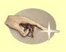
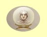

Bílá magie
Vytvoøení jídla
Mana: 20, Cena: 1000
Stvoøí porce jídla pro v¹echny hrdiny, pokud jsou zásoby skuteèného jídla ni¾¹í, ne¾ lze vytvoøit tímto kouzlem.
| Normální | vytvoøí 1 porci + 1 porci za 10bodù dovednosti | |
| Expert | vytvoøí 1 porci + 2 porci za 10bodù dovednosti | |
| Mistr | vytvoøí 1 porci + 3 porci za 10bodù dovednosti |
Zlatý dotek
Mana: 25, Cena: 1500
Promìní vybranou vìc z inventáøe na zla»áky v hodnotì 40% z aktuální ceny pøedmìtu. ¹ance na úspìch kouzla je 10% za ka¾dý bod dovednosti v Bílé magii. Pokud se kouzlo nepovede, pøedmìt se tím po¹kodí.
|  | Normální | Promìní vìc na zla»áky v hodnotì 40% ceny |
| Expert | Promìní vìc na zla»áky v hodnotì 60% ceny | |
| Mistr | Promìní vìc na zla»áky v hodnotì 80% ceny |
Odstraò magii
Mana: 30, Cena: 2000
Odstraní v¹echna kouzla ze v¹ech pøí¹er v dohledu, a» u¾ dobrá nebo ¹kodlivá. Doba zotavení se sni¾uje v závislosti na dovednosti v Bílé magii.
| Normální | Støední zotavení | |
| Expert | Rychlej¹í zotavení | |
| Mistr | Nejrychlej¹í zotavení |
Zpomalení
Mana: 35, Cena: 2500
Sní¾í na polovinu rychlost chùze a dobu zotavení jedné pøí¹ery. Pøí¹era bude útoèit o polovinu ménì ne¾ obvykle a bude skupinu hùøe pronásledovat, pokud se rozhodne utéct. Trvání kouzla je 3 minuty za ka¾dý bod dovednosti v Bílé magii.
| Normální | Støední zotavení | |
| Expert | Rychlej¹í zotavení | |
| Mistr | Nejrychlej¹í zotavení |
Znièení nemrtvého
Mana: 40, Cena: 3000
Vyvolá síly Nebes, které odstraní neèistou temnou magii, která dr¾í pøi ¾ivotì nemrtvé monstrum, zpùsobí této obìti 16 bodù zranìní plus 1-16 bodù za bod dovednosti Bílé magie. Toto kouzlo pùsobí pouze na nemrtvé.
| Normální | Støední zotavení | |
| Expert | Rychlej¹í zotavení | |
| Mistr | Nejrychlej¹í zotavení |
Den Bohù
Mana: 45, Cena: 3500
Souèasnì se¹le na celou skupinu kouzla Moc, Meditace, Rychlost, ©»astný den, Preciznost a Andìl strá¾ný.
 |
Normální | V¹echna kouzla na dvojnásobku dovednosti Bílé magie |
| Expert | V¹echna kouzla na trojnásobku dovednosti Bílé magie | |
| Mistr | V¹echna kouzla na ètyønásobku dovednosti Bílé magie |
Duhové svìtlo
Mana: 50, Cena: 4000
Zpùsobí 25 bodù zranìní plus 1 bod za ka¾dý bod dovednosti v Bílé magii v¹em pøí¹erám v dohledu. Kouzlo lze pou¾ít pouze uvnitø.
| Normální | Støední zotavení | |
| Expert | Rychlej¹í zotavení | |
| Mistr | Nejrychlej¹í zotavení |
Hodina Moci
Mana: 55, Cena: 5000
Souèasnì se¹le na celou skupinu kouzla Zrychlení, Hrdinství, ©tít, Kamenná kù¾e a Po¾ehnání na úrovni dovednosti v Bílé magii.
| Normální | V¹echna kouzla na dvojnásobku dovednosti Bílé magie | |
| Expert | V¹echna kouzla na trojnásobku dovednosti Bílé magie | |
| Mistr | V¹echna kouzla na ètyønásobku dovednosti Bílé magie |
Ochromení
Mana: 60, Cena: 6000
Doèasnì ochromí pøí¹eru, èím¾ jí znemo¾ní hýbat se i útoèit na krátkou dobu pùsobnosti tohoto kouzla, která je 3 minuty za bod dovednosti v Bílé magii. Na ochromenou potvoru lze útoèit, pokud vám to svìdomí dovolí, ona se bránit nemù¾e.
|  | Normální | Pomalé zotavení |
| Expert | Rychlej¹í zotavení | |
| Mistr | Nejrychlej¹í zotavení |
Sluneèní paprsek
Mana: 65, Cena: 7000
Sluneèní paprsek je druhé nejnièivìj¹í kouzlo v Enrothu, koncentruje sluneèní energii do paprsku a zasahuje jednu obì». Proto¾e je k seslání potøeba Slunce, lze kouzlo pou¾ívat jen venku a bìhem dne. Kouzlo zpùsobuje 20 bodù zranìní plus 1-20 bodù za bod dovednosti v Bílé magii.
| Normální | Velmi pomalé zotavení | |
| Expert | Rychlej¹í zotavení | |
| Mistr | Nejrychlej¹í zotavení |
Bo¾ský zásah
Mana: 70, Cena: 10000
Jednou dennì bìhem úsvitu èi soumraku lze po¾ádat bohy na nebesích o pomoc. Kouzlo vyléèí v¹echny do maxima, doplní v¹echnu manu a odstraní v¹echna ne¾ádoucí prokletí. Bohové za tuto slu¾bu po¾adují zlou cenu. Ten, kdo je povolal, zestárneo 10 let. Zotavení po tomto kouzlu se zkracuje s rostoucí dovedností v Bílé magii.
| Normální | Funguje jednou dennì | |
| Expert | Funguje dvakrát dennì | |
| Mistr | Funguje tøikrát dennnì |